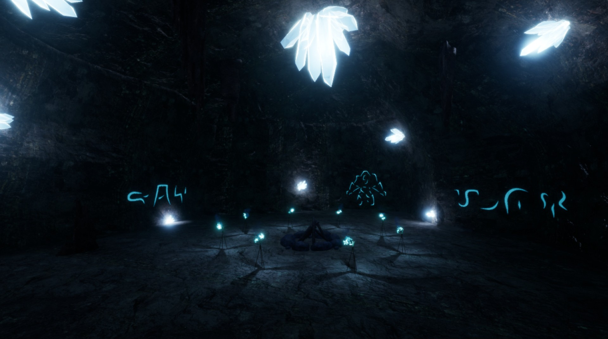
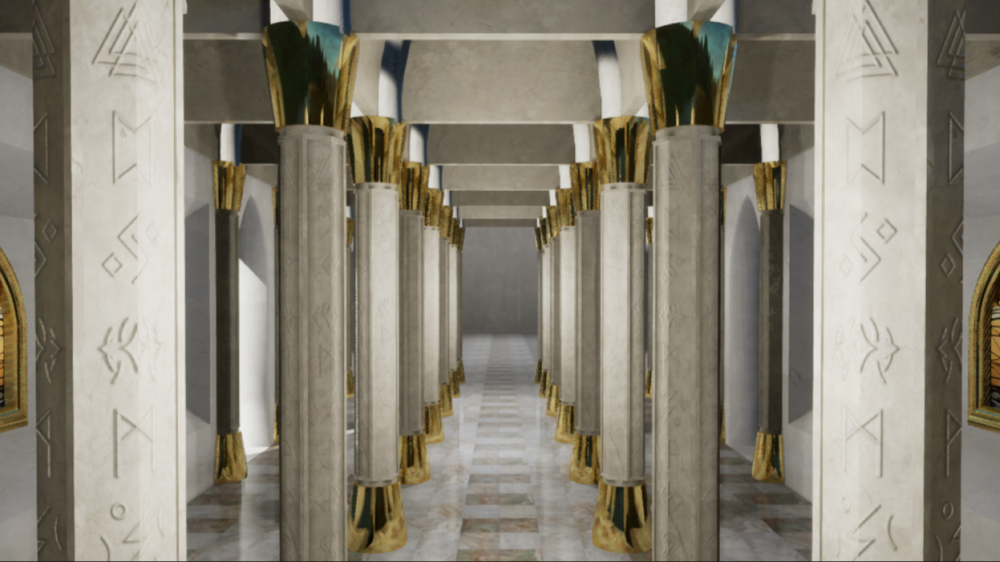
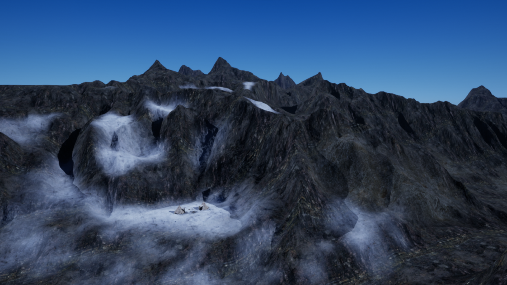

The Rise of Hraesvelg
An open-world game set in the universe of Norse mythology
Game Overview
The Rise of Hraesvelg (TROH) is a story-driven open-world RPG set in the universe of Norse mythology. As chaos spreads through the realms with Hraesvelg's rampage, you must find a way to stop him before he reaches Asgard.
- Explore the 9 realms, each with unique environments and challenges
- Complete various quests and uncover hidden secrets throughout the Realms
- Explore and discover the hidden lore of this world



Quest System
The Quest System is an event-driven manager that handles a graph of Quest Data Assets composed of a graph of Step Data Assets.
The system subscribes to the events linked to the active quest steps to be notified whenever the player makes progress.
When a step gets completed, the system checks if there are following steps and activates them if so. Otherwise, the quest is marked as completed and the next ones are unlocked.
Quest System example
My role and reflection
What I did
I created the world, story, and early foundations for this open-world project.
- I created the vast majority of the character system including movements, status effects and inventory/equipment
- I implemented the base of an animation-driven combat system
- I developed an event-driven quest system that allows for the creation a graph-like quest structure composed of various kinds of objectives.
- I started to design some of the first Realms players will explore
Challenges and lessons
The scale of the idea is its biggest challenge. Creating a story-driven open-world game alone requires you to tackle every aspect of game development, but is, in my opinion, the best way to learn.
This project taught me to break a large vision into smaller systems and milestones to remain motivated and always have room for new mechanics.
The game is currently in active development.